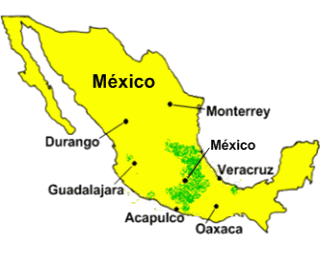
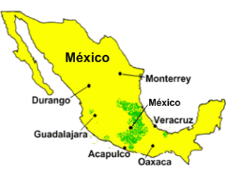
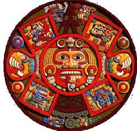

NÁHUATL
VESTIMENTA
El traje del diario para el hombre y la mujer es un traje de color café que se utiliza para realizar todas las labores cotidianas, elaborada con lana natural y algunas combinaciones de bordados sencillos representando plantas relacionadas con la vida diaria como: grecas de tomate o epazote, animales domésticos, etc.
UBICACIÓN
 

Estado de México, Puebla, Guerrero, Hidalgo, Veracruz, Oaxaca, Durango, Morelos, Ciudad de México, Tlaxcala, San Luis Potosí, Michoacán, Jalisco, Nayarit, entre otros.
HISTORIA
El náhuatl se clasifica en la familia uto-azteca y es la lengua hablada por el mayor número de grupos étnicos distintos en México. También fue ampliamente usada desde los siglos XIV a XVII como lingua franca en amplias zonas de Mesoamérica. Sin embargo, el origen ancestral de esta lengua estaría según la evidencia disponible fuera de Mesoamérica. La lengua náhuatl es hablada por 1.200.000 personas en México.
GASTRONOMÍA
Se basa en los cultivos de la milpa o maíz, jitomate, chile, frijoles, quelites, la manera de cocinar también es muy básica, asado o cocido, los complementos son carne de los animales del entorno.